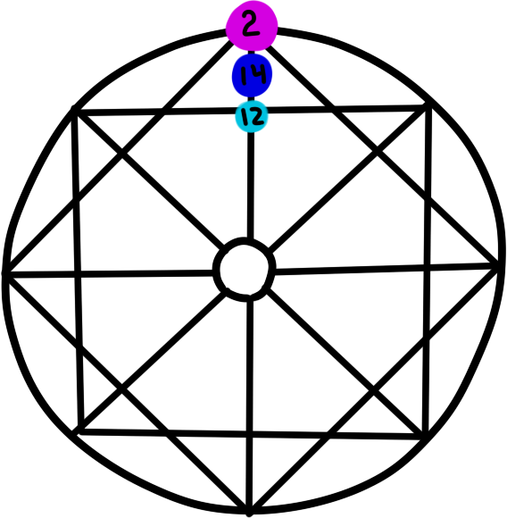

Расшифровка канала талантов
1 энергия
Умение генерировать новаторские идеи. Огромный потенциал реализации любого задуманного дела.
2 энергия
Умение хранить секреты, отличный контакт со всеми природными стихиями, способности в сфере магии, интуиция и понимание других людей. Так же у вас с легкостью получается вся деятельность, связанная с природой (например, флористика).
3 энергия
Обладатели отменного вкуса, с вашим эстетическим даром можно стать первоклассным дизайнером или специалистом в сфере искусства.
4 энергия
Ваш талант заключается в способности эффективно управлять, администрировать и принимать решения. Вы необычайно работоспособны и имеете финансовое чутье в делах.
5 энергия
Умение получать, использовать на практике и передавать накопленные знания. Вы с легкостью завоюете авторитет, способны стать профессионалами своего дела.
6 энергия
Способны налаживать трудные отношения партнеров, способны в торговли и посреднической деятельности. Так же талант проявляется в ситуациях выбора и принятия решений.
7 энергия
Умение продвигаться по служебной лестнице и добиваться успехов в этой сфере. Так же вам присущ дух изобретателя, новатора, вы способны увлечь других своими смелыми идеями.
8 энергия
Способность сохранять равновесие в любой ситуации, объективность и непредвзятое отношение ко всему, правовая грамотность, чувство справедливости.
9 энергия
Духовность, понимание высших законов, способность правильно выбрать жизненный путь, умение работать над собой.
10 энергия
Чутье на финансовую выгоду, умение заработать и с умом распорядиться деньгами.
11 энергия
Умение работать с собственным телом, способность эффективно реализовывать заложенный потенциал и добиваться значительных результатов в жизни.
12 энергия
Способность поставить все с ног на голову, умение доносить молитвы до высших сил, входить в измененные состояния сознания, понимание природы эмоций, учение и передача знаний.
13 энергия
Способность исцелять душу и тело, трансформировать себя и мир вокруг. Способны вносить изменения в жизнь других. Нередко такие люди находят реализацию в экстремальных сферах.
14 энергия
Ваш талант в дипломатии. Вы умеете вносить гармонию и равновесие в свое окружение. Способны мирно разрешать конфликты. Всегда и во всем придерживаетесь золотой середины.
15 энергия
Ваш талант в вашей мощной энергии, поэтому вы можете реализовать себя на разных уровнях. Может говорить о даре целителя.
16 энергия
Организаторские способности, способности в сфере логистики. Вы умеете чувствовать время. Разрушать старые структуры и выстраивать на их месте новые, жизнеспособные.
17 энергия
Вы талантливы в дружбе, присутствуют художественные способности и способности в сфере искусства. Вы творческая личность. Креативны. Находитесь под покровительством высших сил.
18 энергия
Человек талантлив в сфере общения и коммуникаций, хорошо развита фантазия и воображение, интуитивен, хорошая связь с подсознанием, знаток человеческой психики.
19 энергия
Харизма, способность вести за собой, лидерские качества, умение выступать публично и презентовать другим свои взгляды
20 энергия
Ваши таланты в системе ценностей, позитивном мировоззрении, в отличных способностях к анализу и получению информации. Дар оратора, вещание на большую аудиторию.
21 энергия
Способность к иностранным языкам, толерантность, объективность взглядов, отсутствие комплексов, интерес к научному прогрессу и современным технологиям, оптимизм и чувство юмора.
22 энергия
Энтузиазм, азарт, спонтанность, способность принимать смелые решения и неординарные решения.